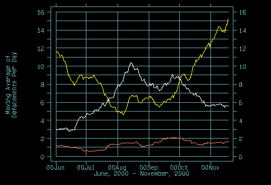
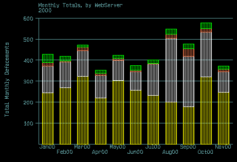
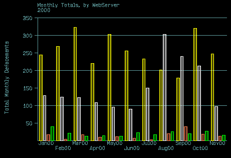
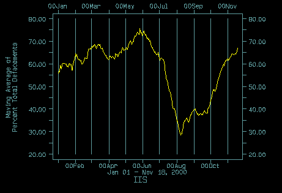
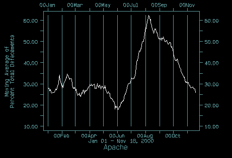
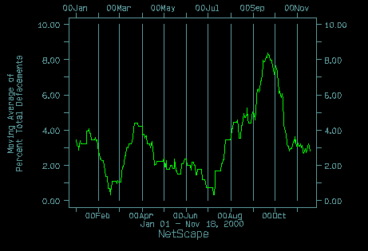
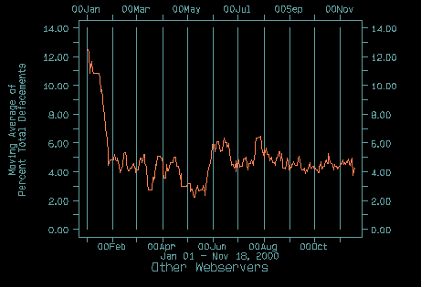
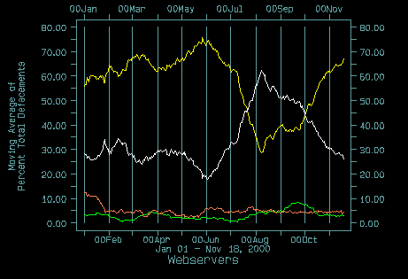

Webserver Totals by Month (stacked bar graph)
Webserver Totals by Month (side-by-side bar graph)
Overall Webserver Shares, Pie Chart
June 2000 to November 18, 2000
Yellow: IIS, White: Apache, Orange: All Others
Webserver Totals by Month, stacked:
Yellow: IIS, White: Apache, Green: NetScape, Orange: All Other
Webserver Totals by Month, side-by-side:
Yellow: IIS, White: Apache, Green: NetScape, Orange: All Other
29-day moving average, IIS:
29-day moving average, Apache:
29-day moving average, NetScape:
29-day moving average, All Other Webservers:
29-day moving average, All Others:
Yellow: IIS, White: Apache, Green: NetScape, Orange: All Others
29 Day Moving Average of Defacements per Day, IIS, Apache, All Others:



(click image for August 1999 to November 2000 range)

(click image for August 1999 to November 2000 range)

(click image for August 1999 to November 2000 range)

(click image for August 1999 to November 2000 range)

(click image for August 1999 to November 2000 range)

Yellow: IIS, White: Apache, Green: NetScape, Orange: All Others
Also read the notes provided on our main statistics page if you haven't already.
All Webserver results derived from NetCraft and from querying the remote webserver itself, at the time the mirror was taken. We are grateful for NetCraft:
This data is unweighted. That means that I have made no effort to present numbers or counts that are proportional to the distribution of venders in the webserver market. Therefore, keep in mind that, for instance, the pie chart above is NOT the distribution of the webserver market by vender. It is the distribution of webservers by vender that have been reported defaced, verified, and mirrored at Attrition.org since we began keeping OS and webserver data in August, 1999. Why would someone want to weight the data? Market weighted data could be used to show the proportional differences between venders in the context of web defacements to infer differences in webserver security. While of great interest, and one of the most frequent requests we get for our statistics pages, it's easy to naively infer webserver security on this weighted data and get matters very wrong. For instance, did Apache suddenly become a less secure webserver due to the recent wu-ftpd exploit (also discussed below)? I reckon not. Nor would it be advisable to infer Linux was any less secure an OS due to wu-ftpd. Not to say weighting data is bad. It's the inferences we draw from weighted data that is open to question. Inferences drawn from known vulnerabilities of vender webservers seems more reasonable and balanced, and would be very interesting. For those wishing to swim these murky waters, NetCraft, linked above, does provide extensive vender data for the webserver market for weighting data.
Moving Averages are used frequently, especially in financial markets. Moving averages smooth the variance out of data, and may help indicate trends. A proportional (by percent, for instance) moving average also readily shows shifts from one item to another. In this context, the recent wu-ftpd bug which was widely exploited starting at least in early June of 2000 is readily seen in the shift away from NT defacements toward OSs frequently running wu-ftpd, mostly various Linux distributions. Webservers, primarily running Apache on Linux, went up subsequently, while IIS dipped as Linux became a prime target as is obvious in the graphs above, especially the proportional moving average graphs.
All Venders are aggregated over all versions. We will present detailed tables of version break-downs, cross-referenced by OS distribution, etc., in the near future.
The "All Other" webserver designation significantly includes any webserver that we were not able to get an identification for. While this is a small count overall, it is large relative to the "All Other" webserver category.
For more information, contact: munge@attrition.org
© 2000 Copyright Brian Martin
Excerpts from this page may be reproduced if
Attrition and the URL
http://www.attrition.org/mirror/attrition/webserver-graphs.html are attributed.
Last modified: Tue Nov 21 23:00:57 EST 2000
{kind=link}
{kind=link}
{kind=link}
{kind=link}
{kind=link}